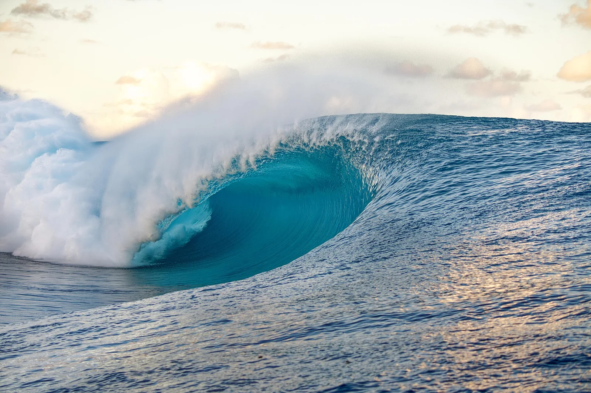

Teahupo'o
Tahiti · surf

La vague la plus lourde du monde : un tube épais et monstrueux qui déferle sur un récif corallien affleurant.
- Lieu
- Tahiti
- Niveau
- Expert
- Activités
- surf
- Type d'eau
- Mer / océan
- Coordonnées
- -17.85, -149.27 (position approximative du secteur)
Dangers à connaître
- Récif affleurant.
- Vague extrêmement lourde.
Le conseil d'Ocean Buddy
L’une des vagues les plus dangereuses au monde ; à voir absolument, à surfer si tu es pro.
Ouvrir dans Ocean Buddy Télécharger sur l'App Store
Source : Description historique Ocean Buddy · vérification externe en attente.